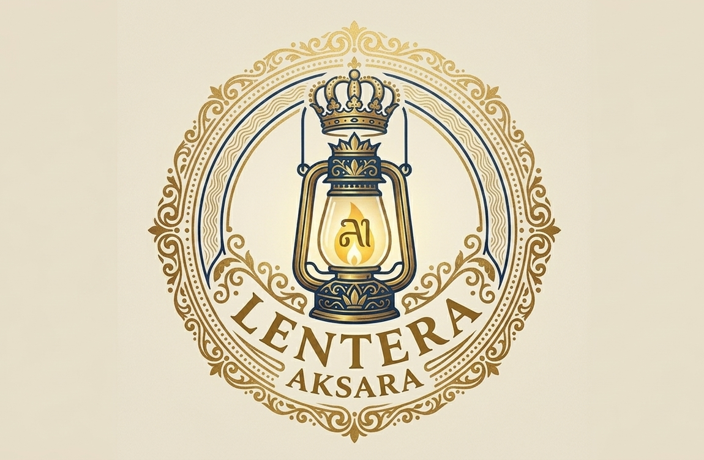
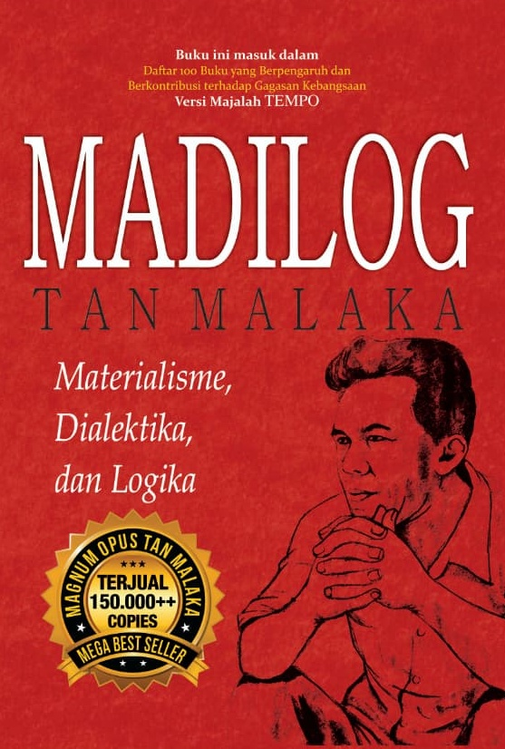

Dashboard

Koleksi
BUKU FILSAFAT

Madilog
Madilog (singkatan dari Materialisme, Dialektika, dan Logika) adalah magnum opus karya Tan Malaka. Diterbitkan pada tahun 1951, buku ini merupakan panduan berpikir rasional dan ilmiah yang bertujuan untuk membebaskan bangsa Indonesia dari cara berpikir feodal, takhayul, dan "logika mistika" agar mampu mandiri serta merdeka seutuhnya
Detail BukuNOVEL

Dear Nathan
Dear Nathan adalah novel remaja populer karya Erisca Febriani yang kemudian diadaptasi menjadi film laris Indonesia. Ceritanya berfokus pada dinamika asmara antara Salma, siswi teladan yang kaku, dan Nathan, siswa berandalan namun berhati lembut, yang saling mengubah hidup satu sama lain
Detail BukuKatalog
BUKU FILSAFAT
Madilog
Penulis : Tan Malaka
Tahun Terbit: 1951
Madilog (singkatan dari Materialisme, Dialektika, dan Logika) adalah magnum opus karya Tan Malaka. Diterbitkan pada tahun 1951, buku ini merupakan panduan berpikir rasional dan ilmiah yang bertujuan untuk membebaskan bangsa Indonesia dari cara berpikir feodal, takhayul, dan "logika mistika" agar mampu mandiri serta merdeka seutuhnya
NOVEL
Dear Nathan
Penulis : Erisca Febriani
Tahun Terbit : 2016
Dear Nathan adalah novel remaja populer karya Erisca Febriani yang kemudian diadaptasi menjadi film laris Indonesia. Ceritanya berfokus pada dinamika asmara antara Salma, siswi teladan yang kaku, dan Nathan, siswa berandalan namun berhati lembut, yang saling mengubah hidup satu sama lain
Kategori
FILSAFAT
NOVEL